본 포스트는 Youngwoon Lee 교수님의 Deep Reinforcement Learning 강의 자료 중 Lecture 01-2 — Imitation Learning (총 50장)을 바탕으로, 강의를 처음 듣는 독자도 논리적 흐름을 따라갈 수 있도록 재구성한 것입니다. 원본 슬라이드는 영문으로 작성되어 있으며, 본문의 대섹션 구분은 강의 중간중간 반복해서 등장하는 Plan for today 슬라이드의 목차(Where does data come from? → What can go wrong? → Learning from online intervention → Case study in robotic manipulation)를 그대로 따랐습니다. 강화학습의 기본 용어를 정리하는 도입부가 그 앞에 붙습니다.
한 줄 요약 (TL;DR)
“전문가의 행동을 지도학습으로 흉내 내는 것은 강화학습의 가장 값싼 출발점이지만, ’예측이 다음 입력을 바꾼다’는 사실 하나 때문에 지도학습의 보증이 통째로 무너집니다.”
행동 복제(behavioral cloning)는 전문가 시연 \(\mathcal{D} = \{(\mathbf{s}, \mathbf{a})\}\) 위에서 정책 \(\pi_\theta(\mathbf{a} \mid \mathbf{s})\)를 최대우도로 학습하는, 사실상 분류·회귀와 다를 것이 없는 절차입니다. 그러나 정책의 출력이 다음 상태를 바꾸기 때문에 학습 분포와 실행 분포가 어긋나고(\(p_\text{expert}(\mathbf{s}) \neq p_\pi(\mathbf{s})\)), 이 공변량 이동(covariate shift) 위에서 오차가 누적(compounding)됩니다. 이번 강의는 여기에 더해 다봉 시연 데이터(multimodal demonstrations)와 전문가–에이전트 간 관측 가능성 불일치라는 두 가지 실패 지점을 더 짚고, 각각에 대한 처방 — 온라인 교정 데이터를 모으는 DAgger·human-gated DAgger, 행동을 덩어리로 예측하는 action chunking(ACT), 다봉 분포를 표현하는 VAE·Diffusion Policy — 을 실제 로봇 조작 사례로 확인합니다. 마지막으로 DROID·OXE·\(\pi_0\)로 이어지는 데이터 규모 경쟁을 보여 준 뒤, “학습된 행동은 결코 전문가를 넘어설 수 없다”는 모방학습의 본질적 상한을 짚으며 다음 회차의 강화학습으로 넘어갑니다.
1. 강화학습 개관 (Reinforcement Learning)
모방학습으로 들어가기 전에, 이 강의가 서 있는 문제 설정을 먼저 정리합니다.
1.1 강화학습이란 무엇인가 (What is Reinforcement Learning?)
강의는 위키피디아의 정의를 인용하며 출발합니다. 요지는 이렇습니다 — 강화학습(reinforcement learning, RL)은 지능적 에이전트(agent)가 동적인 환경(dynamic environment) 안에서 누적 보상(cumulative reward)을 최대화하기 위해 어떤 행동(action)을 취해야 하는지를 다루는 분야입니다.
이 한 문장에 이미 세 가지 구성 요소가 들어 있습니다.
- 에이전트와 환경의 분리 — 학습의 주체와 그 주체가 상대하는 세계가 나뉩니다.
- 상호작용의 순환 — 에이전트가 행동을 내보내면 환경은 보상과 다음 상태를 돌려주고, 이것이 다시 다음 행동의 입력이 됩니다.
- 누적이라는 단어 — 한 시점의 이득이 아니라 시간에 걸쳐 쌓인 총합이 목적입니다.
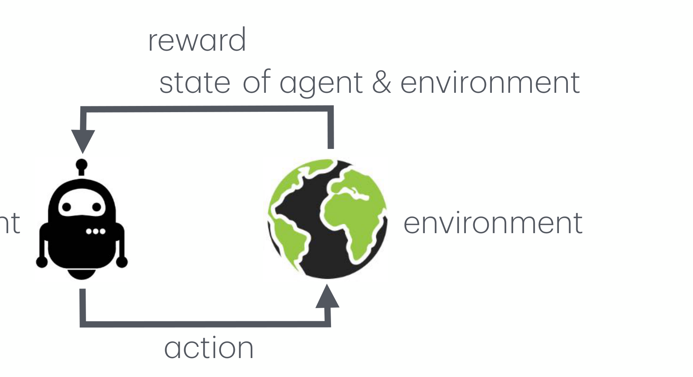
1.2 의사결정 문제 (Decision Making Problem)
강화학습을 하나의 학습 문제로 좁혀 보면, 그것은 의사결정 문제입니다.
- 입력(Input): 상태 \(\mathbf{s}\) (또는 관측 \(\mathbf{o}\))
- 출력(Output): 행동 \(\mathbf{a}\)
- 모델(Model): 정책 \(\pi_\theta\)
- 목표(Objective): 주어진 상태들에 대해 최적의 행동 열(optimal sequence of actions)을 찾는 것
정책 \(\pi(\mathbf{a} \mid \mathbf{s})\)는 상태 \(\mathbf{s}\)가 주어졌을 때 행동 \(\mathbf{a}\)에 대한 조건부 분포입니다. 파라미터 \(\theta\)로 표현된 정책은 \(\pi_\theta\)로 씁니다.
강의는 정책을 에이전트(agent) · 전략(strategy) · 제어기(controller)와 같은 것으로 부른다고 명시합니다. 제어 이론에서 온 세 번째 이름이 특히 중요한데, 이후 등장하는 로봇 조작 사례에서 정책의 출력이 실제로 관절 각도 명령이기 때문입니다.
주목할 점은 목표가 “하나의 좋은 행동”이 아니라 행동의 열이라는 것입니다. 지도학습이라면 각 입력마다 독립적으로 최선의 출력을 내면 그만이지만, 여기서는 지금의 선택이 다음에 마주칠 입력을 바꾸므로 열 전체를 놓고 최적성을 따져야 합니다.
1.3 기본 용어 (Basic Terminologies)
매 타임스텝 \(t = 0, 1, 2, \ldots\)에서 벌어지는 일을 기호로 정리하면 다음과 같습니다.
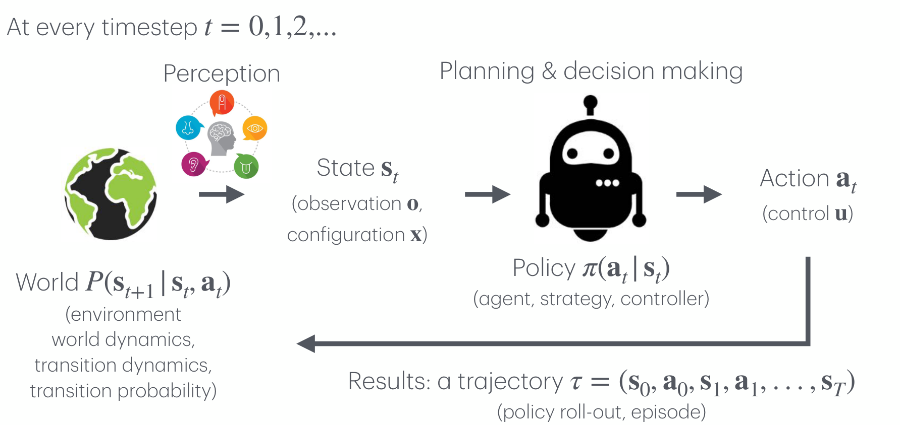
| 기호 | 이름 | 같은 대상을 부르는 다른 이름 |
|---|---|---|
| \(\mathbf{s}_t\) | 상태(state) | 관측 \(\mathbf{o}\), 구성 \(\mathbf{x}\) |
| \(\mathbf{a}_t\) | 행동(action) | 제어 \(\mathbf{u}\) |
| \(\pi(\mathbf{a}_t \mid \mathbf{s}_t)\) | 정책(policy) | 에이전트, 전략, 제어기 |
| \(P(\mathbf{s}_{t+1} \mid \mathbf{s}_t, \mathbf{a}_t)\) | 세계(world) | 환경, 세계 동역학, 전이 동역학, 전이 확률 |
| \(\tau = (\mathbf{s}_0, \mathbf{a}_0, \mathbf{s}_1, \mathbf{a}_1, \ldots, \mathbf{s}_T)\) | 궤적(trajectory) | 정책 롤아웃(policy roll-out), 에피소드(episode) |
강의 자료와 논문마다 표기 관습이 갈리므로, 같은 대상에 여러 이름이 붙어 있다는 사실 자체를 먼저 정리해 두는 편이 이후의 혼란을 줄여 줍니다.
여기서 상태와 관측을 구분하지 않고 쓴다는 점을 짚어 둘 필요가 있습니다. 엄밀히는 에이전트가 세계의 전체 상태를 보지 못하고 그 일부만 관측하는 경우가 일반적이지만, 이번 강의는 표기를 단순히 하기 위해 둘을 같은 자리에 놓습니다. 뒤에서 다룰 관측 가능성 불일치(mismatch in observability) 문제는 바로 이 단순화가 깨지는 지점입니다.
1.4 지도학습 vs. 강화학습 (Supervised Learning vs. Reinforcement Learning)
강의는 자전거 타기를 가르치는 두 장면으로 두 패러다임을 대비시킵니다.
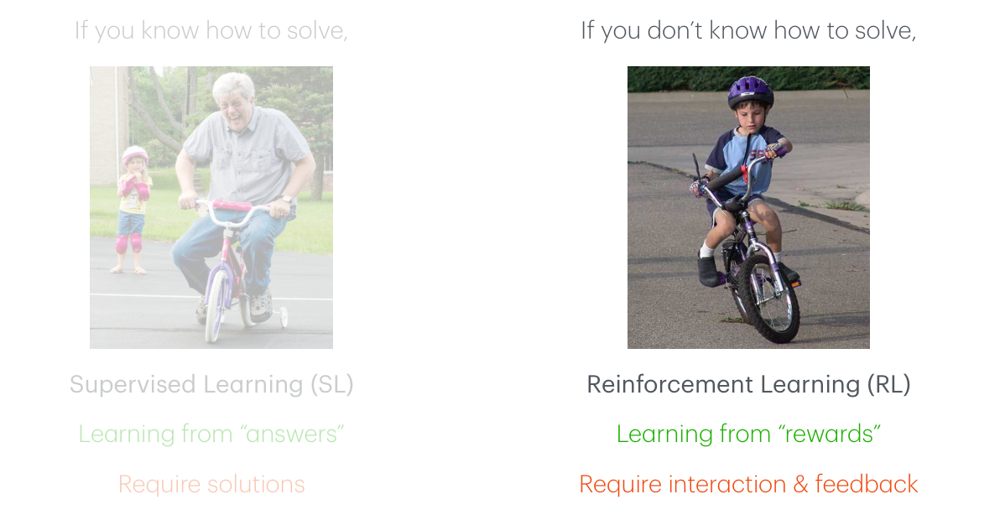
- 지도학습(SL) — 문제를 어떻게 푸는지 알고 있을 때 씁니다. “정답”으로부터 배우며, 그 대가로 해답(solution)을 미리 만들어 주어야 합니다.
- 강화학습(RL) — 문제를 어떻게 푸는지 모를 때 씁니다. “보상”으로부터 배우며, 그 대가로 상호작용과 피드백이 필요합니다.
이 대비를 염두에 두면 모방학습(imitation learning)의 위치가 분명해집니다. 모방학습은 순차적 의사결정 문제(RL의 문제 설정)를 지도학습의 도구(SL의 해법)로 푸는 시도입니다.
문제는 이 조합이 공짜가 아니라는 데 있습니다. 지도학습의 보증은 “입력이 예측과 무관하게 주어진다”는 가정 위에 서 있는데, 순차적 의사결정에서는 바로 그 가정이 성립하지 않기 때문입니다. 이번 강의의 4절 전체가 그 대가를 정산하는 과정입니다.
2. 행동 복제 (Behavioral Cloning)
2.1 핵심 아이디어
행동 복제(behavioral cloning, BC)의 발상은 놀라울 만큼 단순합니다.
- 핵심 아이디어: 정책을 지도학습으로 훈련한다.
- 데이터: 전문가의 의사결정 기록, 즉 시연(demonstrations) \[\mathcal{D} = \{(\mathbf{s}_0, \mathbf{a}_0), (\mathbf{s}_1, \mathbf{a}_1), \ldots\}\]
- 모델: 상태 \(\mathbf{s}\)를 입력받아 행동 \(\mathbf{a}\)를 출력하는 신경망 \(\pi_\theta\)
- 손실: 행동이 이산이면 교차 엔트로피(cross-entropy), 연속이면 L1/L2 손실
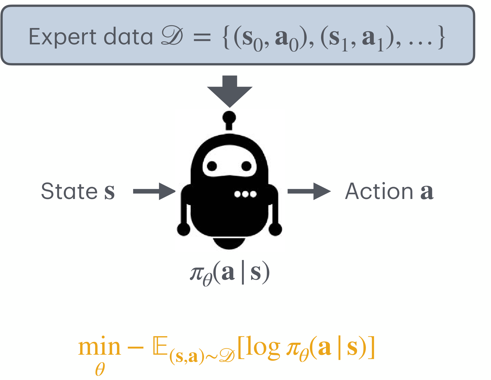
\[ \min_\theta \; -\mathbb{E}_{(\mathbf{s}, \mathbf{a}) \sim \mathcal{D}}\left[\log \pi_\theta(\mathbf{a} \mid \mathbf{s})\right] \]
즉 전문가 데이터에 대한 음의 로그 우도(negative log-likelihood)를 최소화합니다. 이는 정책 \(\pi_\theta\)의 조건부 분포를 전문가의 조건부 분포에 맞추는 최대우도추정(MLE)과 정확히 같습니다.
2.2 교차 엔트로피와 L2 손실은 어디에서 오는가
강의 슬라이드는 “분류면 교차 엔트로피, 회귀면 L1/L2”라고만 적고 넘어가지만, 두 손실은 모두 위의 음의 로그 우도에서 정책의 분포족을 무엇으로 잡느냐에 따라 유도되는 특수한 경우입니다. 순서대로 풀어 보겠습니다.
(a) 이산 행동 — 범주형 정책
행동 공간이 유한집합 \(\mathcal{A} = \{1, \ldots, K\}\)이고 정책이 소프트맥스 출력 \(\pi_\theta(k \mid \mathbf{s})\)를 낸다고 두면, 전문가 행동 \(\mathbf{a}\)를 원-핫 벡터 \(y_k = \mathbb{1}[k = \mathbf{a}]\)로 쓸 때
\[ -\log \pi_\theta(\mathbf{a} \mid \mathbf{s}) = -\sum_{k=1}^{K} y_k \log \pi_\theta(k \mid \mathbf{s}) \]
가 되어, 우변이 곧 교차 엔트로피 손실입니다.
(b) 연속 행동 — 등분산 가우시안 정책
정책을 평균만 학습하는 가우시안 \(\pi_\theta(\mathbf{a} \mid \mathbf{s}) = \mathcal{N}(\mathbf{a}; \mu_\theta(\mathbf{s}), \sigma^2 I)\)로 두면,
\[ -\log \pi_\theta(\mathbf{a} \mid \mathbf{s}) = \frac{1}{2\sigma^2}\left\| \mathbf{a} - \mu_\theta(\mathbf{s}) \right\|_2^2 + \underbrace{\frac{d}{2}\log(2\pi\sigma^2)}_{\theta\text{와 무관한 상수}} \]
이므로, \(\theta\)에 대한 최소화는 \(\left\| \mathbf{a} - \mu_\theta(\mathbf{s}) \right\|_2^2\)의 최소화, 즉 L2 회귀와 동치입니다. 같은 논리로 정책을 라플라스 분포로 두면 \(\left\| \mathbf{a} - \mu_\theta(\mathbf{s}) \right\|_1\), 곧 L1 손실이 나옵니다.
두 손실이 분포 가정의 그림자라는 사실은 이번 강의의 두 번째 실패 지점(4.2절 다봉 시연 데이터)을 미리 설명해 줍니다. L2 손실을 쓴다는 것은 “전문가의 행동 분포가 단봉 가우시안”이라고 선언한 것과 같습니다. 실제 분포가 봉우리 두 개짜리인데도 단봉 모델을 억지로 맞추면, 그 결과는 두 봉우리 어느 쪽도 아닌 평균이 됩니다. 즉 4.2절의 문제는 데이터의 결함이 아니라 모델 가정의 결함입니다.
행동 복제의 계보 자체는 오래되었습니다. 강의는 신경망으로 자율주행 차량을 조종한 초기 연구인 Pomerleau의 ALVINN(NIPS 1989)을 출처로 달아 두고 있습니다.
3. 데이터는 어디에서 오는가 (Where Does Data Come From?)
행동 복제는 시연 데이터를 전제로 합니다. 그렇다면 그 데이터는 어디에서 오는가 — 이것이 Plan for today의 첫 번째 질문입니다.
3.1 이미 쌓이고 있는 시연
어떤 영역에서는 사람들이 이미 시연을 만들어 내고 있고, 그것을 기록하기만 하면 됩니다. 강의가 드는 예는 자동차 운전과 문자 메시지 작성입니다. 운전대의 조향각과 페달 입력, 대화창에 입력된 문장은 그 자체로 \((\mathbf{s}, \mathbf{a})\) 쌍입니다.
3.2 로보틱스에서의 시연 수집 (How to Collect Demonstrations?)
문제는 로봇입니다. 로봇 팔은 사람이 일상적으로 조작하는 물건이 아니므로, 시연을 얻으려면 사람의 의도를 로봇의 행동 공간으로 옮겨 주는 인터페이스를 따로 만들어야 합니다. 강의는 세 가지를 비교합니다.
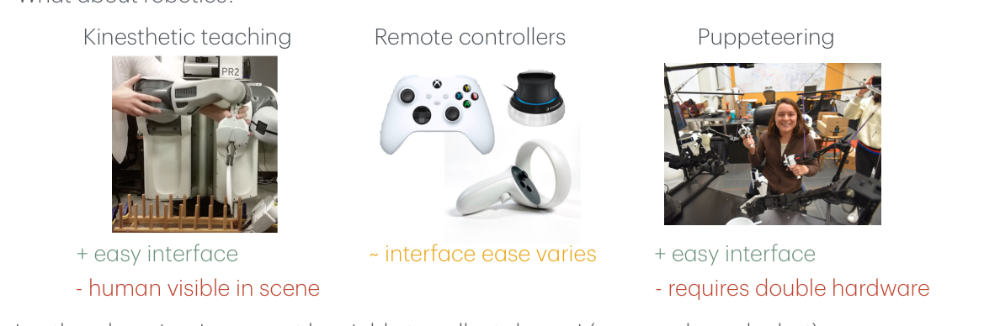
| 방식 | 장점 | 단점 |
|---|---|---|
| 운동감각 교시(Kinesthetic teaching) | 인터페이스가 쉽다 | 사람이 카메라 장면 안에 보인다 |
| 원격 컨트롤러(Remote controllers) | — | 인터페이스의 난이도가 방식마다 제각각이다 |
| 퍼페티어링(Puppeteering) | 인터페이스가 쉽다 | 하드웨어가 두 벌 필요하다 |
강의는 마지막 줄에 결정적인 단서를 답니다 — “다른 영역에서는 시연을 모으는 것 자체가 불가능할 수 있다(예: 사족 보행 로봇).”
사람은 네 다리로 달리는 로봇의 관절 토크를 실시간으로 만들어 줄 수 없습니다. 시연이 존재하지 않으면 행동 복제는 시작조차 할 수 없고, 이 사실이 7절에서 “모방학습만으로 충분한가”라는 물음을 낳습니다.
한편 운동감각 교시의 단점 — 사람이 장면 안에 보인다 — 는 사소해 보이지만 실은 4.3절의 관측 가능성 불일치와 같은 뿌리를 갖습니다. 학습 시의 관측(사람 손이 찍힌 영상)과 실행 시의 관측(사람이 없는 영상)이 다르면, 그 차이 자체가 분포 이동입니다.
4. 무엇이 잘못될 수 있는가 (What Can Go Wrong in Imitation Learning?)
강의의 중심 절입니다. 모방학습이 실패하는 지점을 세 가지로 나누어 짚습니다.
4.1 문제 1 — 오차의 누적 (Compounding Errors)
지도학습의 전제가 무엇이었는지부터 되짚어야 합니다.
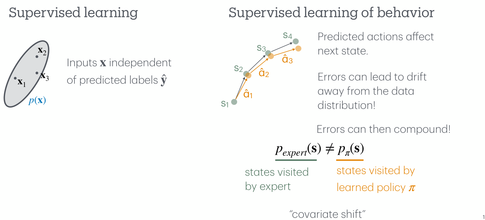
논리를 단계별로 정리하면 다음과 같습니다.
- 지도학습의 전제: 입력 \(\mathbf{x}\)는 예측 \(\hat{\mathbf{y}}\)와 독립적으로 분포 \(p(\mathbf{x})\)에서 뽑힙니다. 한 샘플에서 틀려도 다음 샘플의 입력은 영향을 받지 않습니다.
- 행동 학습에서 깨지는 지점: 예측된 행동이 다음 상태를 결정합니다.
- 표류(drift): 작은 오차가 정책을 데이터 분포 바깥으로 밀어냅니다.
- 누적(compounding): 데이터 분포 바깥의 상태는 훈련 중 본 적이 없으므로 정책이 더 큰 오차를 내고, 그 오차가 다시 더 먼 상태로 밀어냅니다.
\[ p_\text{expert}(\mathbf{s}) \;\neq\; p_\pi(\mathbf{s}) \]
- \(p_\text{expert}(\mathbf{s})\): 전문가가 방문하는 상태 분포 — 훈련 데이터가 뽑힌 분포
- \(p_\pi(\mathbf{s})\): 학습된 정책 \(\pi\)가 방문하는 상태 분포 — 실제로 평가받는 분포
행동 복제는 \(p_\text{expert}\) 위에서 최적화하지만 \(p_\pi\) 위에서 실행됩니다. 두 분포가 어긋나 있으므로, 훈련 손실이 아무리 작아도 실행 성능은 보장되지 않습니다. 더 나쁜 것은 이 어긋남이 정책 자신의 오차 때문에 생기고, 어긋남이 다시 오차를 키우는 양의 되먹임이라는 점입니다.
그렇다면 어떻게 할 것인가. 강의는 두 가지 방향을 제시합니다.
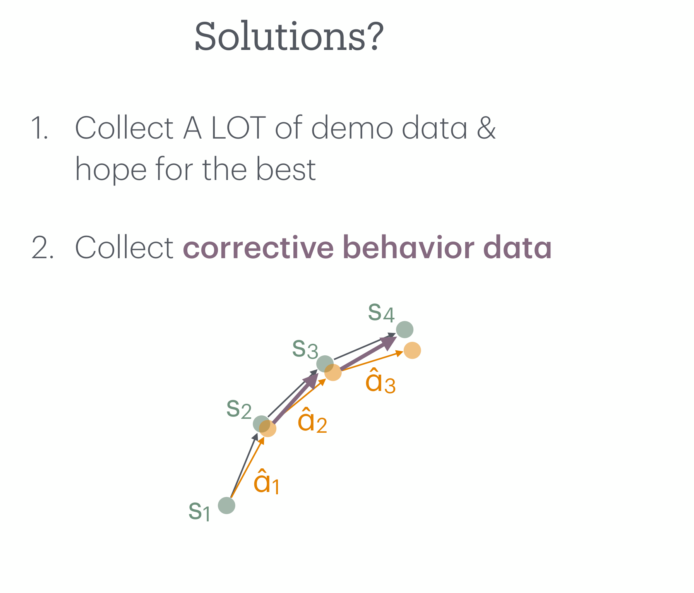
- 아주 많은 시연 데이터를 모으고 최선을 바란다 — 데이터 분포를 넓혀 정책이 벗어날 여지를 줄입니다.
- 교정 행동 데이터(corrective behavior data)를 모은다 — 정책이 실제로 표류한 상태에서 되돌아오는 법을 가르칩니다.
두 번째 방향이 5절의 DAgger로, 첫 번째 방향이 6절 후반의 대규모 데이터셋 경쟁으로 각각 이어집니다.
4.2 문제 2 — 다봉 시연 데이터 (Multimodal Demonstration Data)
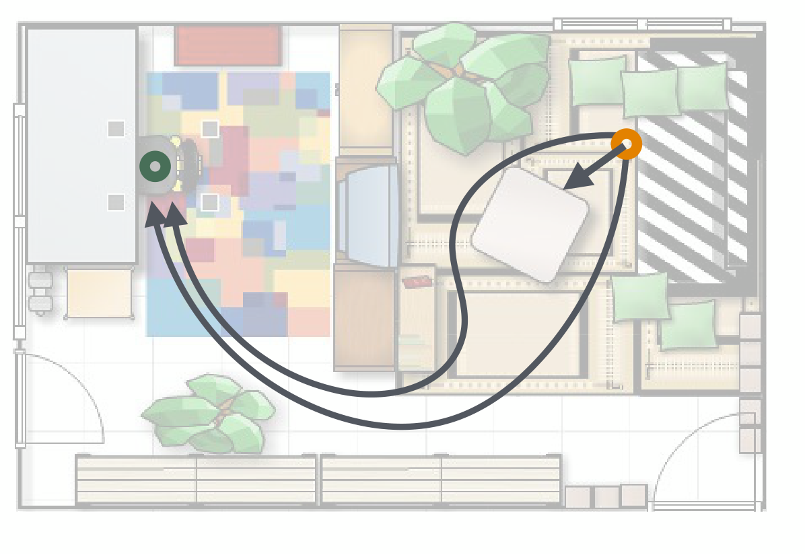
같은 상태에서 전문가가 서로 다른 두 행동을 취한 기록이 데이터에 함께 들어 있는 상황입니다. 장애물을 왼쪽으로 돌든 오른쪽으로 돌든 둘 다 옳은 행동이므로, 이것은 잡음이 아니라 분포의 진짜 구조입니다.
강의는 이 상황이 얼마나 흔한지 명확히 답합니다 — “항상 일어난다(All the time!).” 특히 여러 사람이 나누어 데이터를 모을 때 그렇습니다. 사람마다 같은 과제를 다른 방식으로 수행하기 때문입니다.
2.2절에서 보았듯 \(\ell_2\) 손실은 등분산 가우시안 정책의 음의 로그 우도입니다. 조건부 기댓값의 성질에 따라
\[ \arg\min_{\mu} \; \mathbb{E}_{\mathbf{a} \sim p(\cdot \mid \mathbf{s})}\left[\left\| \mathbf{a} - \mu \right\|_2^2\right] \;=\; \mathbb{E}\left[\mathbf{a} \mid \mathbf{s}\right] \]
이므로, \(\ell_2\)로 학습된 정책이 수렴하는 지점은 행동 분포의 조건부 평균입니다.
문제는 봉우리가 두 개인 분포에서 평균이 두 봉우리 사이의 골짜기에 놓인다는 것입니다. 왼쪽으로 도는 행동과 오른쪽으로 도는 행동의 평균은 “직진”이고, 그 직진이 향하는 곳에는 장애물이 있습니다. 각각의 모드는 모두 유효한 행동인데 그 평균은 유효하지 않다 — 이것이 다봉성이 위험한 이유입니다.
해법은 문제의 진단에서 바로 따라 나옵니다. \(p(\mathbf{a} \mid \mathbf{s})\)를 충분히 표현력 있는 분포족(expressive distribution class)으로 모델링하여 데이터 분포의 모든 모드를 담아내면 됩니다. 강의가 드는 예는 다음과 같습니다.
- 가우시안 혼합(Gaussian mixture)
- 범주형 분포(Categorical) — 행동 공간을 이산화합니다
- VAE(variational auto-encoder) — 6절의 ACT가 택하는 방법입니다
- 확산 모델(diffusion models) — 6절의 Diffusion Policy가 택하는 방법입니다
4.3 문제 3 — 전문가와 에이전트의 관측 불일치 (Mismatch in Observability)
문제: 전문가는 에이전트가 관측하는 것보다 더 많은 정보를 가지고 행동합니다. 인터넷 대화 기록에서 시연을 긁어모으는 경우가 전형적입니다 — 상대가 어떤 사람인지, 내일 무슨 약속이 있는지는 전문가의 머릿속에 있지만 데이터에는 없습니다.
그 결과 정확한 모방이 불가능해집니다(Impossible to accurately imitate). 에이전트 입장에서는 거의 같은 상태에 대해 전혀 다른 행동이 정답으로 주어지는 셈이므로, 이는 4.2절의 다봉성과 겉모습이 비슷하지만 원인이 다릅니다. 다봉성은 정답이 실제로 여러 개인 것이고, 관측 불일치는 정답이 하나인데 그것을 가르는 정보가 관측에서 빠져 있는 것입니다.
해법은 두 방향입니다.
- 에이전트에게 가능한 한 많은 맥락 정보를 준다 — 관측을 전문가의 정보에 가깝게 키웁니다.
- 전문가가 에이전트와 같은 정보만 갖도록 시연을 수집한다 — 전문가의 정보를 관측 수준으로 줄입니다.
두 처방은 정반대로 보이지만 목표는 하나입니다 — 전문가가 조건 짓는 정보와 에이전트가 관측하는 정보를 일치시키는 것입니다. 데이터를 이미 수집한 뒤라면 관측을 키우는 수밖에 없지만, 수집 방식을 설계할 수 있다면 애초에 전문가의 시야를 로봇의 카메라로 제한하는 편이 훨씬 확실합니다. 3.2절에서 운동감각 교시가 “사람이 장면 안에 보인다”는 이유로 감점당한 것도 같은 맥락입니다.
4.4 세 문제의 정리
이번 절에서 짚은 세 가지 실패 지점을 원인과 처방으로 나란히 놓으면 다음과 같습니다.
| 문제 | 원인 | 처방 |
|---|---|---|
| 1. 오차의 누적(compounding errors) | 행동이 다음 상태를 바꾸므로 \(p_\text{expert}(\mathbf{s}) \neq p_\pi(\mathbf{s})\) | 대량의 시연, 또는 교정 데이터(5절·6절 action chunking) |
| 2. 다봉 시연 데이터(multimodal demonstrations) | 단봉 분포 가정(\(\ell_2\))이 모드를 평균 냄 | 표현력 있는 분포족 — 혼합 가우시안, 범주형, VAE, 확산 모델 |
| 3. 관측 불일치(mismatch in observability) | 전문가의 정보 \(\supsetneq\) 에이전트의 관측 | 맥락 정보를 늘리거나, 전문가의 정보를 관측 수준으로 제한 |
5. 온라인 개입으로부터의 학습 (Learning from Online Intervention)
4.1절의 두 번째 처방 — 교정 행동 데이터 — 를 실제로 어떻게 모을 것인가를 다룹니다.
5.1 DAgger — 온라인으로 교정 데이터 모으기
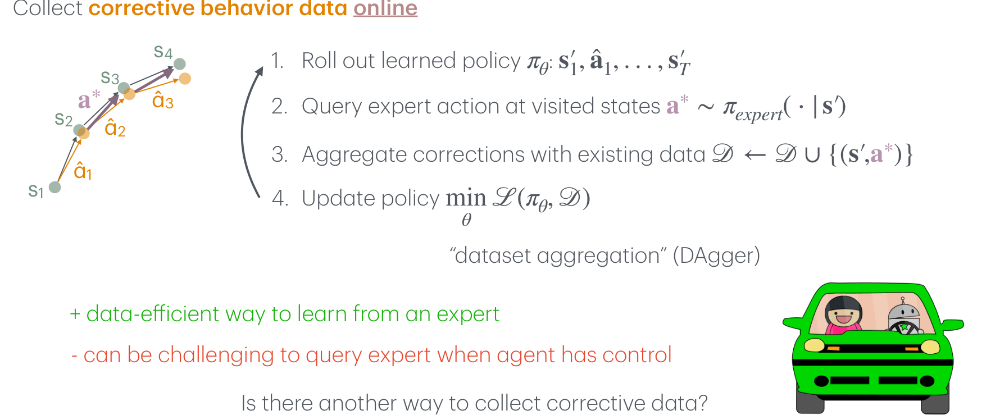
각 라운드마다 다음을 반복합니다.
- 학습된 정책 \(\pi_\theta\)를 굴려 궤적을 얻습니다: \(\mathbf{s}'_1, \hat{\mathbf{a}}_1, \ldots, \mathbf{s}'_T\)
- 정책이 방문한 상태에서 전문가 행동을 질의합니다: \(\mathbf{a}^* \sim \pi_\text{expert}(\cdot \mid \mathbf{s}')\)
- 교정을 기존 데이터에 합칩니다: \(\mathcal{D} \leftarrow \mathcal{D} \cup \{(\mathbf{s}', \mathbf{a}^*)\}\)
- 정책을 갱신합니다: \(\min_\theta \mathcal{L}(\pi_\theta, \mathcal{D})\)
출처: Ross et al., A Reduction of Imitation Learning and Structured Prediction to No-Regret Online Learning, AISTATS 2011.
이 절차가 공변량 이동을 정확히 겨냥한다는 점이 핵심입니다. 2단계에서 질의가 이루어지는 상태 \(\mathbf{s}'\)는 전문가의 궤적 위가 아니라 정책 자신이 만들어 낸 궤적 위에 있습니다. 라운드를 거듭할수록 데이터셋 \(\mathcal{D}\)는 \(p_\text{expert}\)가 아니라 \(p_\pi\)에 가까운 상태들로 채워지고, 그 위에서 정책을 학습하므로 훈련 분포와 실행 분포의 간격이 좁혀집니다.
- 장점: 전문가로부터 데이터 효율적으로 배웁니다. 같은 수의 전문가 레이블로 더 넓은 상태 영역을 덮습니다.
- 단점: 에이전트가 제어권을 쥔 상태에서 전문가에게 질의하는 것이 까다롭습니다. 자율주행 차가 스스로 달리는 동안 사람에게 “지금 이 순간 당신이라면 핸들을 얼마나 꺾겠습니까”를 매 프레임 묻는 일은 현실적으로 어렵습니다.
5.2 Human-Gated DAgger — 전문가가 제어권을 넘겨받기
앞의 단점을 뒤집으면 자연스러운 변형이 나옵니다. 전문가에게 매 순간 행동을 묻는 대신, 잘못될 때 직접 개입해서 몰아 보라고 하는 것입니다.
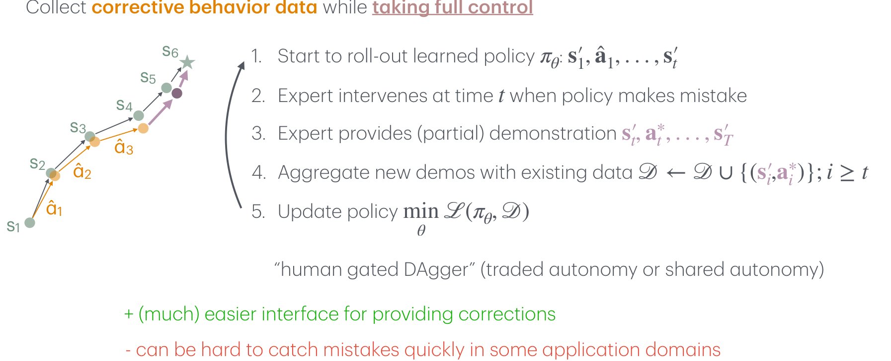
- 학습된 정책 \(\pi_\theta\)를 굴리기 시작합니다: \(\mathbf{s}'_1, \hat{\mathbf{a}}_1, \ldots, \mathbf{s}'_t\)
- 정책이 실수를 저지르는 시각 \(t\)에 전문가가 개입합니다.
- 전문가가 그 지점부터 (부분) 시연을 제공합니다: \(\mathbf{s}'_t, \mathbf{a}^*_t, \ldots, \mathbf{s}'_T\)
- 새 시연을 기존 데이터에 합칩니다: \(\mathcal{D} \leftarrow \mathcal{D} \cup \{(\mathbf{s}'_i, \mathbf{a}^*_i)\};\; i \geq t\)
- 정책을 갱신합니다: \(\min_\theta \mathcal{L}(\pi_\theta, \mathcal{D})\)
제어권을 사람과 정책이 주고받으므로 traded autonomy 또는 shared autonomy라고도 부릅니다.
두 방법의 차이는 질의의 단위에 있습니다.
| DAgger | Human-Gated DAgger | |
|---|---|---|
| 전문가에게 요구하는 것 | 방문한 모든 상태에 대한 행동 레이블 | 개입 시점 이후의 시연 |
| 제어권 | 항상 정책이 쥔다 | 개입 시점에 전문가에게 넘어간다 |
| 장점 | 데이터 효율적 | 교정 인터페이스가 (훨씬) 쉽다 |
| 단점 | 제어권이 정책에 있을 때 질의하기 어렵다 | 실수를 빠르게 포착하기 어려운 영역이 있다 |
human-gated DAgger의 단점인 “어떤 응용 영역에서는 실수를 빠르게 포착하기 어렵다”는 것은 단순한 불편함이 아닙니다. 이 방법의 전제는 사람이 실수를 알아보고 제때 제어권을 가져간다는 것인데, 고주파 제어(뒤에 나올 ACT의 50 Hz)나 결과가 한참 뒤에야 드러나는 장기 과제에서는 그 전제 자체가 위태롭습니다. 개입이 늦으면 교정 데이터는 이미 회복 불가능한 상태에서 시작하게 됩니다.
6. 로봇 조작 사례 연구 (Case Study in Robotic Manipulation)
지금까지의 문제와 처방이 실제 시스템에서 어떻게 구현되는지를 따라갑니다.
6.1 ALOHA 시스템 (ALOHA System)
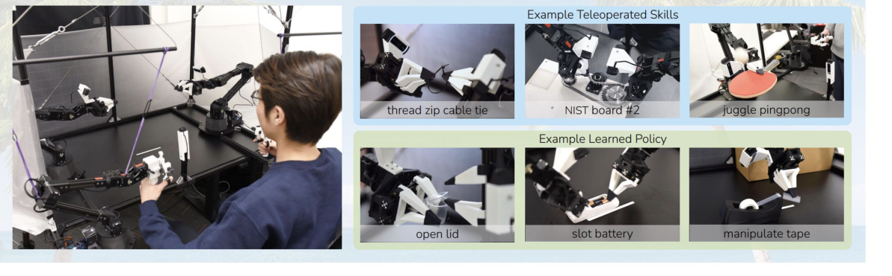
Zhao et al., Learning Fine-Grained Bimanual Manipulation with Low-Cost Hardware (RSS 2023)에서 제안된 ALOHA는 저비용 양팔 원격조작 시스템입니다.
- 총 비용 2만 달러 미만 — 기성품 로봇 팔에 오픈소스 부품과 코드를 결합했습니다.
- 강의는 이 시스템의 미덕으로 접근성과 함께 “가지고 놀기 재미있다”는 점을 덧붙입니다.
저비용·오픈소스라는 성격은 부수적인 장점이 아닙니다. 시연 데이터를 모으는 비용이 곧 모방학습의 병목이므로(3.2절), 시연 수집 하드웨어의 가격을 한 자릿수 낮추는 것 자체가 연구의 기여가 됩니다.
6.2 ACT — 두 문제에 대한 두 해법
ACT의 목표는 이미지에서 목표 관절 위치로 가는 신경망 정책을 학습하는 것입니다. 이 과제에서 강의는 4절의 문제 1·2가 그대로 재현되는 것을 보여 줍니다.
- Challenge 1: 지도학습 기반 모방학습이 오차 누적에 취약합니다. 특히 50 Hz에서 그렇습니다.
- Challenge 2: 사람의 시연이 과제를 서로 다른 방식으로 수행하므로 다봉 데이터 분포가 됩니다.
그 결과는 냉혹합니다 — 소박한 정책 학습은 성공률 0%를 기록합니다.
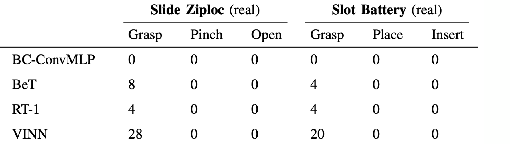
해법 #1 — 오차 누적에 대하여: Action Chunking
- 정책이 약 60개의 행동으로 이루어진 덩어리(chunk)를 개루프(open-loop)로 예측합니다.
- 매 타임스텝마다 새 결정을 내리는 대신, 약 0.8 Hz의 폐루프(closed-loop)로 동작합니다.
- 이는 표류(drift)와 개루프 실행 사이의 절충(trade-off)입니다.
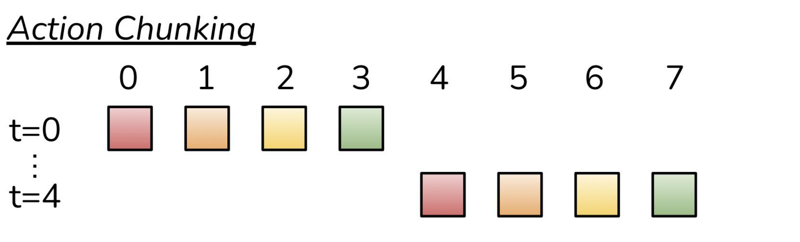
4.1절의 되먹임 고리는 “결정 → 오차 → 상태 이동 → 더 큰 오차”였습니다. 이 고리는 결정이 일어날 때마다 한 번씩 돌아갑니다.
ACT는 제어 주파수 자체를 낮추는 대신 결정의 빈도만 낮춥니다. 50 Hz로 제어하면서 약 60스텝짜리 덩어리를 한 번에 내놓으면, 재결정은 대략
\[ \frac{50\ \text{Hz}}{60} \;\approx\; 0.83\ \text{Hz} \]
로 일어납니다. 즉 되먹임 고리가 도는 횟수가 약 60분의 1이 됩니다.
물론 공짜는 아닙니다. 덩어리 안에서는 관측을 무시하고 개루프로 움직이므로, 환경이 예상과 다르게 변해도 반응하지 못합니다. 슬라이드가 “trade-off drift & open-loop”라고 적은 것이 바로 이 지점입니다.
같은 해법의 두 번째 항목으로, ACT는 행동을 상대 관절 위치가 아니라 목표 절대 관절 위치(target absolute joint positions)로 정의합니다. 상대 위치로 표현하면 각 스텝의 오차가 위치에 그대로 더해지지만, 절대 위치로 표현하면 각 예측이 독립적인 목표점이 되어 오차가 누적되지 않습니다.
해법 #2 — 다봉성에 대하여: VAE
4.2절의 처방 그대로, ACT는 변분 오토인코더(VAE)를 써서 다봉성을 모델링합니다. 잠재변수 \(z\)가 “이번 시연이 어떤 방식으로 과제를 수행하는가”를 담아내면, 정책은 \(z\)로 조건 지어진 단봉 분포만 표현하면 되므로 평균으로 붕괴하지 않습니다.
6.3 ACT의 정책 구조 (Action Chunking with Transformers)
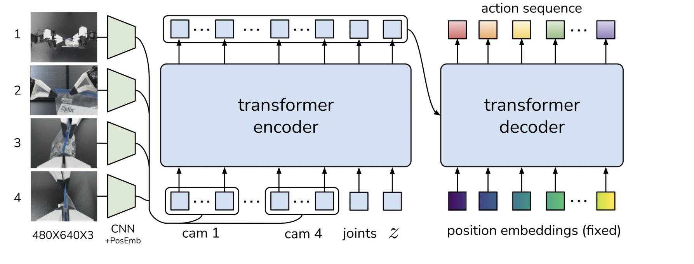
구조를 입력에서 출력까지 따라가면 다음과 같습니다.
- 관측 인코딩 — 네 대의 카메라 이미지(\(480 \times 640 \times 3\))를 각각 CNN에 통과시키고 위치 임베딩을 더해 토큰 열로 만듭니다.
- 상태와 잠재변수 결합 — 로봇의 관절 상태와 VAE 잠재변수 \(z\)를 토큰으로 추가합니다.
- 트랜스포머 인코더 — 여러 카메라의 시점과 고유수용감각 정보를 하나의 표현으로 융합합니다.
- 트랜스포머 디코더 — 고정된 위치 임베딩을 질의로 받아, 덩어리 안의 각 시점에 대응하는 행동을 병렬로 생성합니다.
강의가 제시한 실험 결과에서는 시연 50개만으로 학습한 정책이 뚜껑이 달린 컵을 다루는 과제에서 84%, 배터리를 슬롯에 끼우는 과제에서 96%의 성공률을 기록합니다. 같은 종류의 과제에서 기존 방법들이 0%였던 것(6.2절의 표)과 대비하면, 문제를 정확히 진단하고 그에 맞는 구조를 넣는 것이 데이터를 늘리는 것보다 먼저라는 사실이 드러납니다.
6.4 Mobile ALOHA
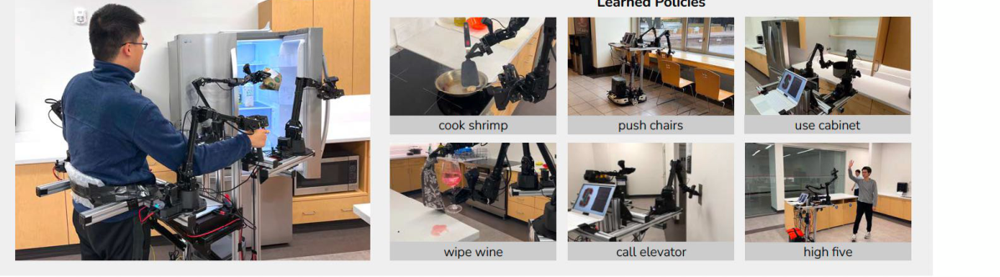
Fu et al., Mobile ALOHA: Learning Bimanual Mobile Manipulation with Low-Cost Whole-Body Teleoperation (CoRL 2024)은 ALOHA에 이동식 베이스와 전신 원격조작을 결합했습니다.
강의는 두 개의 영상을 제시합니다 — 화장실 청소를 사람이 원격조작으로 수행하는 장면(10배속)과, 새우 요리를 학습된 정책이 자율 수행하는 장면(6배속)입니다. 원격조작 시연과 자율 실행이 나란히 놓이는 배치는 6.1절의 ALOHA와 동일하며, 이 계보 전체가 “모으기 쉬운 시연 → 그것을 흉내 내는 정책”이라는 하나의 공식을 따르고 있음을 보여 줍니다.
6.5 Diffusion Policy
ACT가 다봉성을 VAE로 처리했다면, Chi et al., Diffusion Policy: Visuomotor Policy Learning via Action Diffusion (RSS 2023)은 확산 모델로 처리합니다.
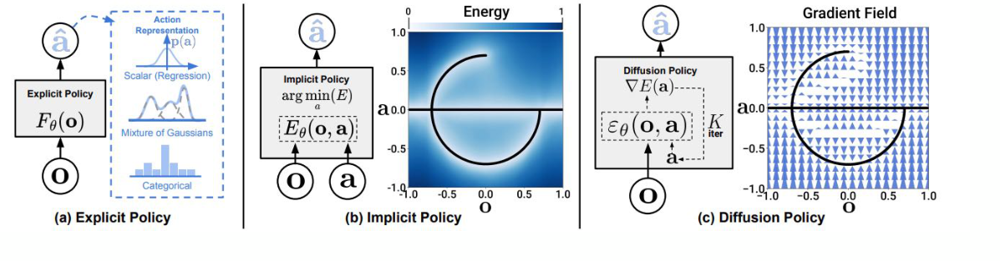
- 핵심 아이디어: 확산 과정(diffusion process)을 통해 미래 행동의 열(sequence)을 생성합니다.
- 장점 1: 시간적으로 일관된(temporally consistent) 궤적을 생성합니다.
- 장점 2: 다봉 궤적 분포를 포착합니다.
강의는 Diffusion Policy를 소개하기 직전에 “무엇이 잘못될 수 있는가” 슬라이드를 다시 띄우고 1번(오차 누적)과 2번(다봉 데이터)을 함께 강조합니다. 이 배치가 요점입니다.
- 행동을 하나가 아니라 열(sequence)로 생성하므로 ACT의 action chunking과 같은 효과를 얻습니다 → 문제 1
- 확산 모델은 임의의 복잡한 분포를 표현할 수 있으므로 모드가 평균으로 붕괴하지 않습니다 → 문제 2
즉 “무엇을 생성하는가(열)”가 문제 1을, “어떤 분포족으로 생성하는가(확산)”가 문제 2를 각각 담당합니다.
강의는 결과로 컵 뒤집기·소스 펴 바르기·T자 블록 밀기 세 과제의 자율 실행 영상(4배속)을 제시합니다.
6.6 로봇 파운데이션 모델 (Robotic Foundation Model, RFM)
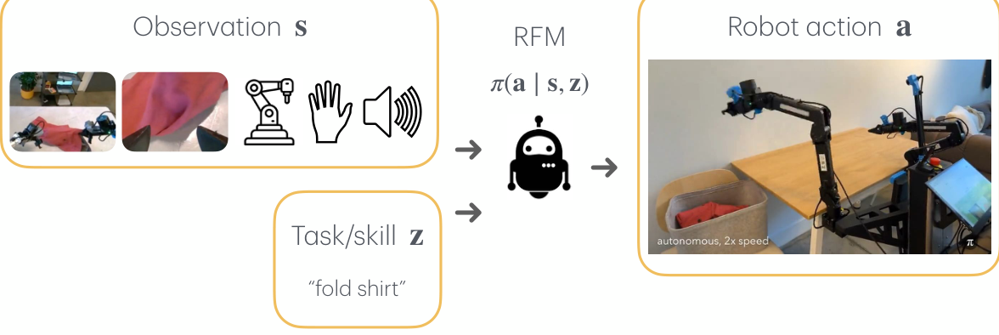
로봇 파운데이션 모델(RFM)은 정책을 다음과 같이 확장합니다.
\[ \pi(\mathbf{a} \mid \mathbf{s}, \mathbf{z}) \]
- \(\mathbf{s}\) — 관측. 여러 시점의 영상, 로봇의 고유수용감각, 촉각, 음성 등 다중 모달리티입니다.
- \(\mathbf{z}\) — 과제 또는 기술(task/skill). “fold shirt”와 같은 자연어 지시가 대표적입니다.
과제를 조건 변수로 받는다는 것은 곧 하나의 정책이 여러 과제를 수행한다는 뜻이고, 그러려면 여러 과제·여러 환경·여러 로봇에 걸친 데이터가 필요합니다. 이어지는 두 절이 그 데이터 이야기입니다.
6.7 대규모 로봇 데이터셋 (Large-Scale Robot Datasets)
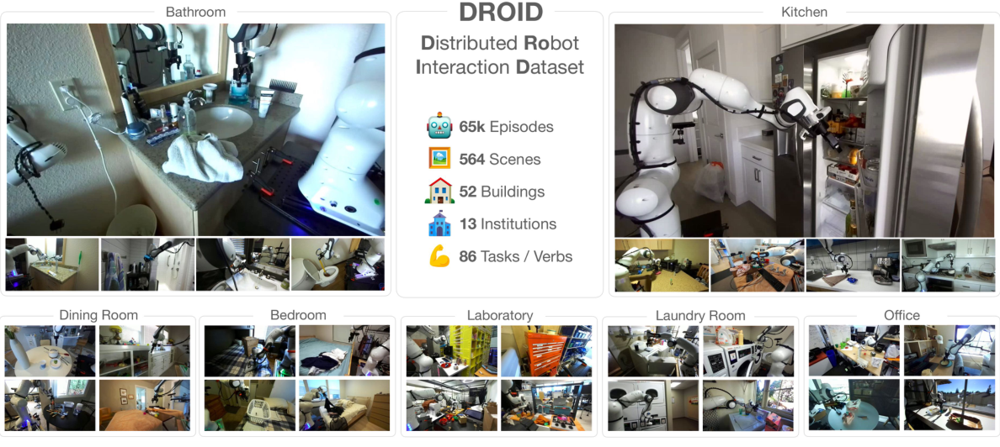
DROID (Distributed Robot Interaction Dataset) — Khazatsky and Pertsch et al., DROID: A Large-Scale In-the-Wild Robot Manipulation Dataset (RSS 2024)
| 항목 | 규모 |
|---|---|
| 에피소드 | 65k |
| 장면(scenes) | 564 |
| 건물 | 52 |
| 기관 | 13 |
| 과제/동사 | 86 |
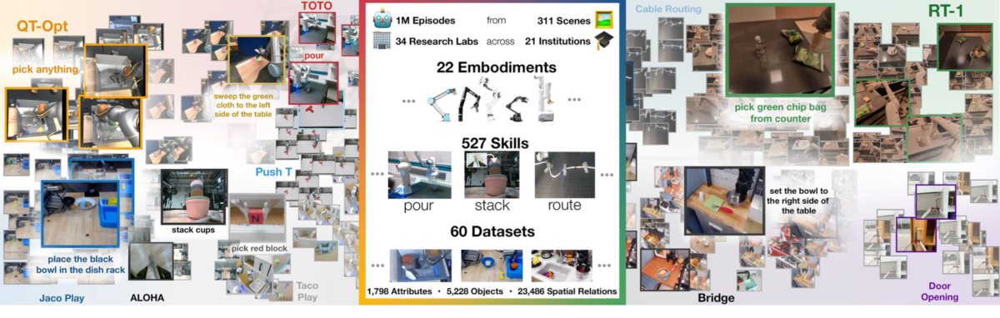
Open X-Embodiment (OXE) — Open X-Embodiment Collaboration et al., Open X-Embodiment: Robotic Learning Datasets and RT-X Models (ICRA 2024). ICRA 2024 최우수 논문입니다.
| 항목 | 규모 |
|---|---|
| 에피소드 | 1M |
| 장면 | 311 |
| 연구실 / 기관 | 34개 연구실, 21개 기관 |
| 로봇 형태(embodiments) | 22 |
| 기술(skills) | 527 |
| 구성 데이터셋 | 60 |
| 속성 / 물체 / 공간 관계 | 1,798 / 5,228 / 23,486 |
6.8 \(\pi_0\) — Vision-Language-Action 모델
Black et al., \(\pi_0\): A Vision-Language-Action Flow Model for General Robot Control (RSS 2025)은 앞의 데이터 위에서 실제로 학습된 파운데이션 모델입니다.
- 사전학습(pre-training): 행동 복제로 1만 시간 분량의 고품질 데이터를 학습합니다. 시간으로 환산하면 약 417일입니다.
- 사후학습(post-training): 과제마다 5–100시간 이상의 데이터를 추가로 씁니다.
여기서 짚고 넘어갈 점이 있습니다 — 최신 로봇 파운데이션 모델의 사전학습 방법이 여전히 행동 복제(BC)라는 사실입니다. 4절에서 진단한 세 가지 문제는 사라진 것이 아니라, 데이터 규모와 구조 설계로 완화된 채 남아 있습니다.
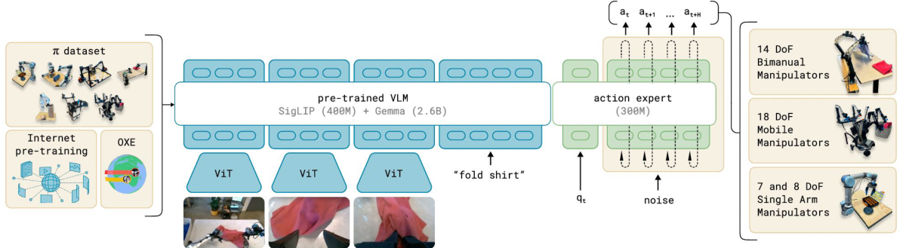
- 백본: 3B 규모 VLM
- 데이터: 1만 시간 이상
- 학습 비용: 128대의 H100 GPU로 14일 이상, 약 8만 달러
6.9 데이터의 규모 문제 (We Need Data…)
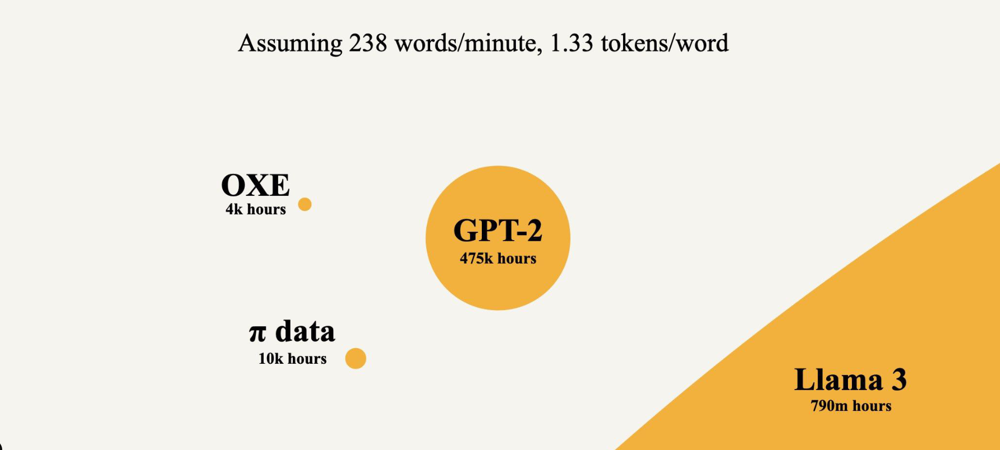
같은 축 위에서 비교하면 로봇 데이터의 빈곤이 드러납니다(분당 238단어, 단어당 1.33토큰 환산 기준).
| 데이터셋 | 규모 |
|---|---|
| OXE | 4천 시간 |
| \(\pi\) data | 1만 시간 |
| GPT-2 | 47만 5천 시간 |
| Llama 3 | 7억 9천만 시간 |
\(\pi\) data와 Llama 3 사이에는 약 다섯 자릿수의 간격이 있습니다. 언어 데이터는 인터넷에 이미 존재하지만 로봇 행동 데이터는 누군가가 로봇을 움직여야만 생깁니다.
강의가 이 슬라이드 다음에 Tesla Optimus의 데이터 수집 현장 영상을 놓은 것은 이 때문입니다. 수십 명의 작업자가 VR 장비를 쓰고 늘어선 작업대에서 휴머노이드를 원격조작하는 장면은, 4.1절의 첫 번째 처방 — “아주 많은 시연 데이터를 모으고 최선을 바란다” — 이 산업 규모로 실행되는 모습입니다.
6.10 최근 동향 (Recent Developments)
강의는 마지막으로 최신 결과 두 가지를 소개합니다.
- Sunday Robotics — ACT-1 (2025년 11월 19일 공개). 로봇 데이터 없이 학습된(trained with zero robot data) 프런티어 로봇 파운데이션 모델을 표방하며, ① 초장기 지평 과제(ultra long-horizon task), ② 제로샷 일반화(zero-shot generalization), ③ 고급 손재주(advanced dexterity) 세 가지를 내세웁니다.
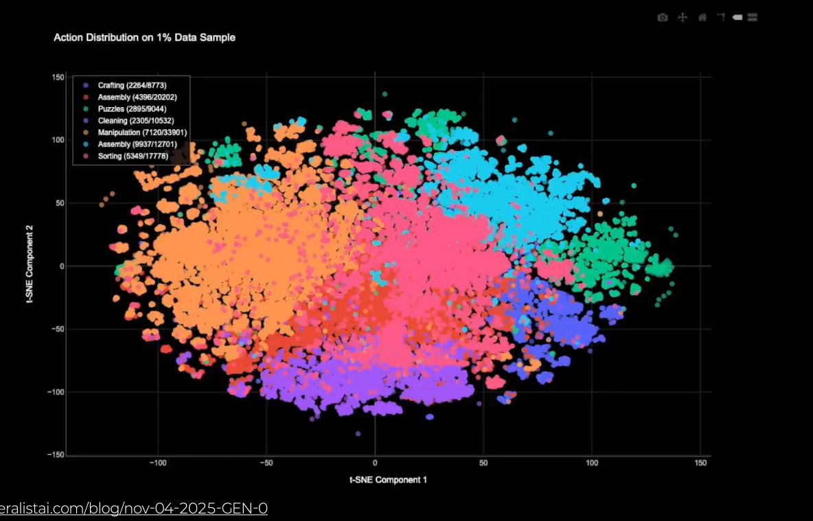
- Generalist — GEN-0. 대규모 행동 데이터의 분포를 t-SNE로 시각화한 결과와, 두 대의 로봇 팔이 완전 자율로(1배속) 작업하는 영상을 제시합니다.
7. 모방학습만으로 충분한가 (Is Imitation Learning All You Need?)
강의는 모방학습에 대한 균형 잡힌 평가로 마무리합니다.
긍정적 평가: 모방학습은 행동을 배우는 단순하면서도 강력한 프레임워크입니다. 6절에서 본 것처럼, 현재 최전선의 로봇 파운데이션 모델조차 사전학습의 뼈대는 행동 복제입니다.
그러나 네 가지 한계가 남습니다.
- 전문가 시연을 모으는 것이 어렵거나 불가능한 경우가 있습니다. — 3.2절의 사족 보행 로봇이 그 예입니다.
- 학습된 행동은 결코 전문가보다 나아질 수 없습니다. — 목적함수가 “전문가를 흉내 내라”인 이상, 전문가의 성능이 상한입니다.
- 경험과 간접적 피드백으로부터 배우는 틀을 제공하지 않습니다. — 모방학습이 요구하는 신호는 “그 상황에서 무엇을 했어야 하는가”라는 정답이지, “결과가 좋았는가”라는 평가가 아닙니다.
- 에이전트가 스스로, 자신의 실수로부터 자율적으로 배울 수 있는가? — 강의가 던지는 마지막 물음입니다.
특히 두 번째 항목이 결정적입니다. 아무리 데이터를 늘리고 구조를 정교하게 만들어도 모방이라는 목적함수 자체가 성능의 천장을 만들어 냅니다. 그 천장을 뚫으려면 목적함수를 “흉내 내기”에서 “잘하기”로 바꿔야 하고, 그것이 곧 보상을 도입하는 일입니다.
1.4절의 대비가 여기에서 완결됩니다. 모방학습은 “푸는 법을 아는 사람이 있을 때” 쓰는 도구였습니다. 그 사람이 없거나, 그 사람보다 잘해야 하거나, 정답 대신 평가만 주어질 때 — 그때가 강화학습이 필요한 순간입니다.
다음 회차의 주제는 강화학습의 기초(Reinforcement learning basics)입니다.
정리하며 (Closing Remarks)
이번 강의의 논증 사슬을 단계별로 압축하면 다음과 같습니다.
| 단계 | 내용 | 근거 |
|---|---|---|
| ① 문제의 정의 | 순차적 의사결정은 상태 → 정책 → 행동 → 전이의 닫힌 순환이며, 그 기록이 궤적 \(\tau\)다 | Basic terminologies |
| ② 값싼 출발점 | 푸는 법을 아는 전문가가 있다면, 그 시연을 지도학습으로 흉내 내면 된다 | Behavioral cloning |
| ③ 목적함수의 정체 | BC는 \(\min_\theta -\mathbb{E}_{\mathcal{D}}[\log \pi_\theta(\mathbf{a}\mid\mathbf{s})]\), 즉 MLE이며 교차 엔트로피·L2는 그 분포 가정의 그림자다 | 범주형 / 가우시안 유도 |
| ④ 전제의 붕괴 | 지도학습은 입력이 예측과 무관함을 전제하지만, 행동은 다음 입력을 만든다 | Compounding errors |
| ⑤ 붕괴의 이름 | 훈련 분포와 실행 분포가 어긋나고(\(p_\text{expert} \neq p_\pi\)) 오차가 되먹임으로 누적된다 | covariate shift |
| ⑥ 두 번째 실패 | 같은 상태에 두 정답이 있을 때 단봉 가정(\(\ell_2\))은 조건부 평균, 곧 어느 모드도 아닌 행동을 낸다 | Multimodal demonstrations |
| ⑦ 세 번째 실패 | 전문가의 정보가 에이전트의 관측보다 크면 정확한 모방이 원리적으로 불가능하다 | Mismatch in observability |
| ⑧ 처방 I — 분포를 옮긴다 | 정책이 방문한 상태에서 교정을 받아 데이터를 \(p_\pi\) 쪽으로 끌어온다 | DAgger / human-gated DAgger |
| ⑨ 처방 II — 결정을 묶는다 | 행동을 덩어리로 예측해 되먹임 고리가 도는 횟수를 50 Hz에서 약 0.8 Hz로 낮춘다 | ACT의 action chunking |
| ⑩ 처방 III — 분포족을 넓힌다 | VAE·확산 모델로 \(p(\mathbf{a}\mid\mathbf{s})\)의 모든 모드를 표현해 평균 붕괴를 막는다 | ACT / Diffusion Policy |
| ⑪ 처방 IV — 데이터를 늘린다 | 환경을 넓힌 DROID, 로봇 형태를 넓힌 OXE 위에 \(\pi_0\)가 BC로 사전학습된다 | DROID / OXE / \(\pi_0\) |
| ⑫ 규모의 한계 | 그럼에도 로봇 데이터는 언어 데이터에 비해 다섯 자릿수가량 작다 | Comparing datasets |
| ⑬ 남는 상한 | 데이터와 구조로 완화되지 않는 한계는 “전문가를 넘을 수 없다”는 목적함수 자체다 | Is imitation learning all you need? |
| ⑭ 다음 걸음 | 정답 대신 보상으로 배우는 틀이 필요하다 | Next class — RL basics |